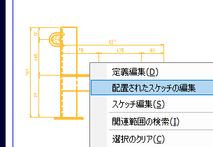
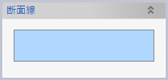
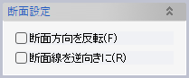
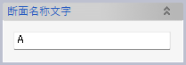
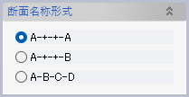
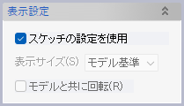
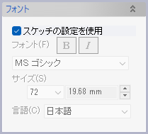
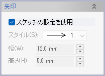

投影図から断面図を作成します。元になる投影図は、3Dモデルドキュメントに含まれていて、かつモデルと関連性を持っている必要があります。
前準備として、元になる投影図内に、断面線となる直線を作図します。
断面図を作ることのできる投影図は、
のいずれかで作成されたスケッチです。
※1 「図面モード」パラメータを「3D図面スケッチ」と設定したもの。
※2 「出力先」パラメータを「このモデル内の新規図面」と設定したもの。
断面線となる直線を選択できる状態、つまり元になる投影図スケッチの編集中であれば、「一品断面図」コマンドを起動できます。断面線を選んでOKをクリックしてください。
各種一品図を作成すると、図面要素が作成され、図面上には投影図スケッチが図面ビューとして配置されます。図面を開いた状態で、図面ビューのコンテキストメニューから「配置されたスケッチの編集」を選ぶことでも、元になる投影図スケッチを編集することができます。


スケッチ内の直線を選択します。選択した直線は断面図作成時に非表示になります。

断面や断面線の向きを設定します。プレビューを見ながら変更してください。

断面名に使う文字を設定します。

断面名の付け方を設定します。
 
断面線の各種設定です。